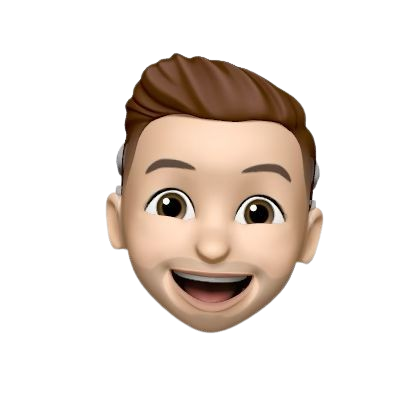

Open for conversations about AI.
Mark
Goertz
Software Engineer & AI Researcher
Building intelligent systems that turn complex data into actionable insight.
About
Professional Profile
Engineer first.
Research-driven.
Outcome focused.
I’m passionate about creating practical software solutions that make a meaningful difference. Whether building complex systems or working with cutting-edge AI and cloud technologies, I thrive on tackling challenges—and value working with teams that strive for excellence, growth, and real-world results.
-
mark.goertz@icloud.com -
From the Netherlands 🇳🇱
How I Work
I take a hands-on, iterative approach to problem solving—learning by building, continuously refining through feedback, and focusing on effective communication. My aim is to create clear, robust solutions without unnecessary complexity.
Build Fast, Learn Faster
I believe in rapid prototyping and early experimentation to drive insight and share progress efficiently.
Foundations Matter
I strive to understand core principles—ensuring solutions are well-grounded and avoiding unnecessary complexity.
Ask, Share, Improve
I value collaboration, seek constructive feedback, and enjoy working with others to continuously enhance projects.
Skills I Can Use
Selected Impact
- Designed and delivered a hybrid ETL platform on Azure that reduced manual processing and improved reporting turnaround.
- Built real-time monitoring foundations for production systems, giving operations teams immediate infrastructure visibility.
- Contributed to applied AI research for wearable stress detection, including data pipeline design and model experiments.

Resume
Education
-
Master of Applied IT, MSc
2024 — 2025Researching AI-driven stress detection through wearable biosensors at Fontys University of Applied Sciences. Focus areas include machine learning pipelines, developing 1D-CNNs for stress detection, and validating the results.
-
Software Engineering, BSc
2019 — 2024Graduated with a comprehensive foundation in software architecture, agile development, and cloud computing. Capstone project: a production-grade hybrid ETL pipeline on Azure serving multiple enterprise clients.
-
Minor in Entrepreneurship
2023Developed a full business plan and go-to-market strategy for a tech startup, covering lean methodology, financial modelling, and investor pitching.
Experience
-
iO Digital — AI/Software Engineer
2025Develop AI and cloud-based solutions tailored to client needs, using a wide range of technologies across web development and data engineering. Focus on building advanced Agentic AI products, such as search and voice agents, by leveraging platforms like OpenAI and Anthropic. Core technologies include Python, TypeScript, and React.
-
Fontys — Student Applied AI Researcher
2024 — 2025Conducted data engineering for a Smart Stress Wearables project. Analyzed the data, trained classification models on biometric signals, and validated the results.
-
Gilde-BT — Software Engineer (Graduation)
2023 — 2024Designed and shipped a hybrid ETL pipeline using Azure Data Factory and Serverless Functions, automating data transfer from on-premises databases to customer-facing dashboards. Reduced manual data handling by 90% and cut delivery time from days to minutes.
-
Stream Group — Software Engineer Intern
2022Built a real-time server monitoring solution with Grafana and InfluxDB, giving the operations team immediate visibility into system health across 50+ production nodes.
Portfolio
Selected project examples grouped by software engineering, AI, and applied research work.
-
Operations Dashboard
Software
An operations dashboard with real-time telemetry, alerting, and KPI drill-down views.
-
Wearable Stress Classifier
AI
A wearable signal pipeline feeding a machine learning model for stress state classification.
-
Hybrid ETL Platform
Software
An Azure-based ETL stack combining batch ingestion and serverless transformation workflows.
-
Research Poster Series
Other
A publication-ready visual set for communicating experiment results and insights.
Get in Touch
Have a project that needs engineering muscle, a research collaboration in mind, or just want to talk tech? I'd love to hear from you.
-
Location Roermond, Limburg, NL